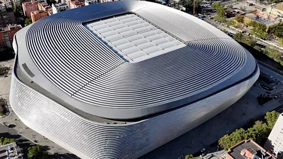

Real Madrid: Kings of Europe
Real Madrid CF is the most successful club in the history of the European Cup and UEFA Champions League. Founded in 1902, the club first won the competition in its very first edition in 1956 and has gone on to lift the trophy a record 15 times. No other club has come close to matching that total, and Real Madrid also holds the record for the most final appearances. The club's ability to perform in knockout football has earned it the nickname "Kings of Europe" among fans and pundits alike.
Key Dates
- 1956 - Wins the first-ever European Cup, beating Stade de Reims
- 2000 - Claims a ninth European title in the Champions League era
- 2014 - "La Decima": a tenth title, won against city rivals Atletico Madrid
- 2017 - Becomes the first club to retain the Champions League title
- 2018 - Wins a third title in a row under manager Zinedine Zidane
- 2024 - Beats Borussia Dortmund to lift a record-extending 15th title
Quick Facts
- Record 15 European Cup / Champions League titles
- Most final appearances of any club in the competition's history
- Home ground: Santiago Bernabeu, capacity over 78,000
- Nickname: "Los Blancos" (The Whites), for their all-white home kit
Home Ground

In Their Own Words
I knew off by heart the names of the Real Madrid team that played Liverpool in the European Cup final of 1981.
- Rafael Benitez, football manager
Watch: 2024 Final Highlights
Highlights of Real Madrid's 2-0 win over Borussia Dortmund in the 2024 Champions League final.
Watch on Youtube: "https://youtu.be/GgKIhlyjX2w?si=S95JFiKT_5V0YAed"
Learn More
Read more about the competition on the official UEFA Champions League website.